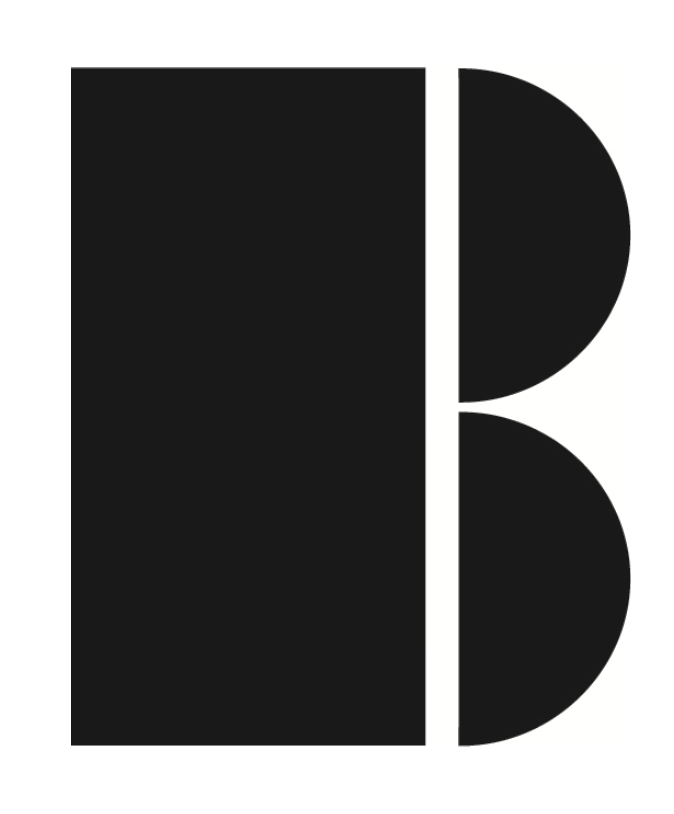

Historia de TreceStudio

Los orígenes de TreceStudio en el mundo de la fotografía: una historia nacida de la pasión por capturar momentos y transformarlos en imágenes que cuentan algo más que lo que se ve a simple vista. Un equipo que comenzó experimentando con luz, color y composición, motivado por la idea de dar a las marcas una voz visual única. Escena que transmita creatividad, curiosidad y ganas de aprender, con un enfoque humano y auténtico. La fotografía como herramienta para conectar, inspirar y crear un impacto real en la forma en que las personas ven un producto, una marca o una historia. Estilo visual cálido y cercano, que refleje los valores de pasión, dedicación y búsqueda constante de nuevas formas de contar historias.
Como he llegado hasta aqui!
Los orígenes de TreceStudio en el mundo de la fotografía: una historia nacida de la pasión por capturar momentos y transformarlos en imágenes que cuentan algo más que lo que se ve a simple vista. Un equipo que comenzó experimentando con luz, color y composición, motivado por la idea de dar a las marcas una voz visual única. Escena que transmita creatividad, curiosidad y ganas de aprender, con un enfoque humano y auténtico. La fotografía como herramienta para conectar, inspirar y crear un impacto real en la forma en que las personas ven un producto, una marca o una historia. Estilo visual cálido y cercano, que refleje los valores de pasión, dedicación y búsqueda constante de nuevas formas de contar historias.
Como he llegado hasta aqui!
Soy Nerea Rubio, diseñadora de interiores de formación, pero con una pasión que siempre me ha acompañado: la fotografía y la moda. Tras una etapa viviendo en el extranjero, decidí dar un giro a mi vida y apostar por mis ilusiones. Así nació Trecestudio, un espacio creativo donde buscamos evadir lo habitual y transformar cada proyecto en una experiencia única. En Trecestudio creemos en la fuerza de la creatividad y en el valor de darle a cada trabajo un toque especial y diferente, para que las imágenes hablen por sí mismas y dejen huella.